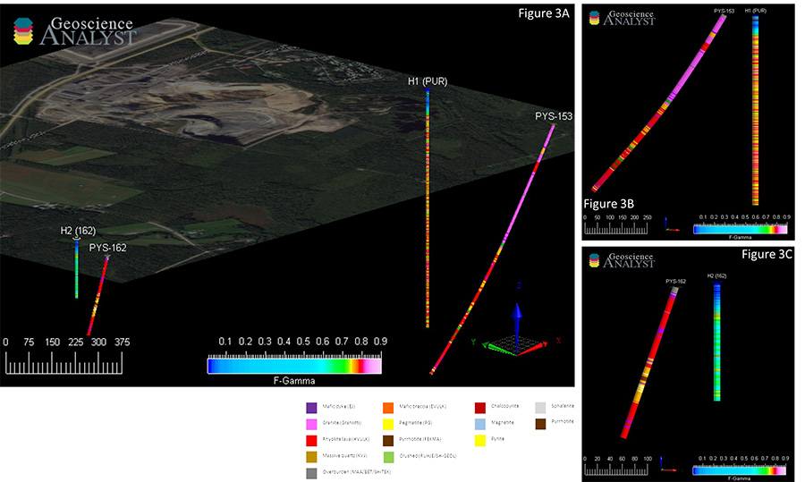
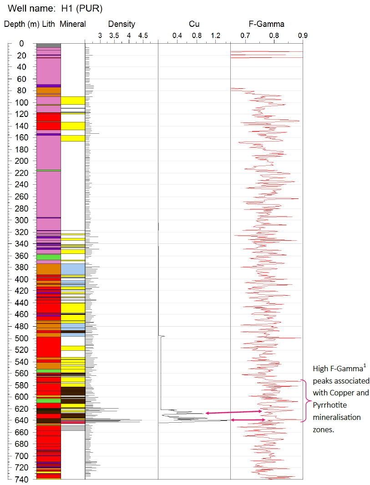
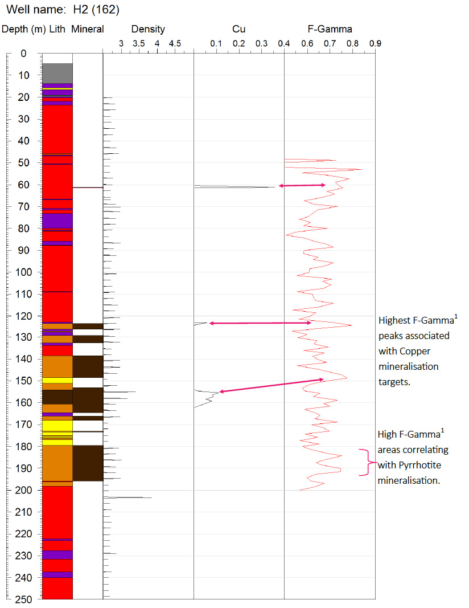

COPPER AND ZINC SULPHIDE TARGETING USING ADROK’S ATOMIC DIELECTRIC RESONANCE (ADR) TECHNIQUE
First Quantum Minerals ltd required a technique to identify Sulphide (Copper/Zinc) within a well constrained geological setting in hopes of identifying locations to extend the life of their Pyhäsalmi mining operations.
AIM:
- To identify the volcanogenic metal sulphide deposits remaining within an ore body surrounded by typically granitic host rocks (Figure 1).
- Data was collected for 6 V-bores in Pyhäsalmi, Finland. This case study describes the analysis of two of these V-bores: H1 (PUR) & H2 (162), and aims to establish confidence that ADR can aid in First Quantum’s exploration and resource evaluation programmes.
EXPLORATION CHALLENGES:
- Angled drilling is often used to avoid historical mine workings that exist throughout the structure. The location of residential housing on the surface also reduces the available locations for drill sites and the use of traditional geophysics techniques.
- The depth to current economic reserves exist to within 1400m.
- The majority of the economic reserves for this deposit have subsequently been mined, and production is expected to cease in 2019. First Quantum Minerals are looking to make new economic discoveries in the area and extend the life of the mine.
GEOLOGICAL CONTEXT:
- Formed in a submarine syn-volcanic hydrothermal system, Pyhäsalmi mine contains a metal sulphide ore body that accumulated from sulphide minerals precipitating out onto and below the sea floor.
- The regime at Pyhäsalmi is typical of volcanogenic massive sulphide ore deposits (VMS deposits) rich in Copper and Zinc.
- The surrounding igneous host rock is comprised of granites, rhyolitic lavas and mafic dykes/breccia.
- The primary lithological constituents of the ore body are over 90% sulphide minerals such as Pyrite (FeS), Pyrrhotite (Fe₁₋ₓS) and Magnetite (Fe₃O₄).
- Copper & Zinc in the form of Chalcopyrite (CuFeS₂) and Sphalerite ((ZnFe)S) mineralisation are present within this sulphide body in economic accumulations. Exhibiting Copper (1.85%), Zinc (1.55%), along with accumulations of Gold (0.46g/t) and Silver (14.6 g/t) which are present in smaller quantities.
RESULTS:
 Figure 3A: Geoscience analyst 3D model showing the location of Pyhäsalmi mine in relation to the angled lithological drill hole data provided by First Quantum Minerals (PYS-153 & PYS-162) and the Adrok V-bores H1 (PUR) & H2 (162), showing intensity of returned frequency at depth. Figure 3B: 2D plain showing the relative position of the drill hole (PYS-153) and V-bore H1 (PUR) comparing the First Quantum Mineral’s drilled downhole lithology with Adrok’s F-Gamma Figure 3C: 2D plain showing the relative position of the drill hole (PYS-162) and V-bore H2 (162) comparing the First Quantum Mineral’s drilled downhole lithology with Adrok’s F-Gamma  Figure 4: Client lithological column, mineralisation column, density log and Copper recovery, corrected to 90o, alongside Adrok’s F-Gamma log for H1  Figure 5: Client lithological column, mineralisation column, density log and Copper recovery, corrected to 90o, alongside Adrok’s F-Gamma log for H2 (162).CONCLUSIONS:
- For the two holes processed within this case study, H1 (PUR) & H2 (162), both were able to correlated results with the training data. Specifically, Adrok’s F-gamma log showed that peaks in F-Gamma1 could pick out areas of Copper and Pyrrhotite mineralisation (Figure 4 & 5).
- Within H1 (PUR) (Figure 4) it is noted that there are other locations with high F-Gamma hits, however the maximum peak occurred at the main Chalcopyrite mineralisation, giving weight to this interpretation.
- In addition to this, the downhole data provided by the client are from angled holes and deviate from Adrok’s V-bore increasingly with depth, up to 600m in H1 (PUR) (Figure 3B).
BENEFITS FOR FIRST QUANTUM MINERALS:
- Fast data acquisition — Multiple locations scanned every day.
- Fast data processing — Data processing occurred within 1 month.
- Target acquisition — ADR scans correlated to training data highlighting mineralisation.
- Confident depth estimate — The signatures seen correlated well with the training data.
- Very low impact — Very little environmental or social impact.
- Cost effective — Low cost pre-drilling surveying intelligence to help drilling program decision making.
1. F-Gamma— The reflectivity of the ADR signal returned from depth (Maxf-Minf/Maxf+Minf = F-gamma ratio). Adrok’s prognosis is that crystalline metals give high F-gamma returns. This usually means a higher bandwidth and more high frequency bands.